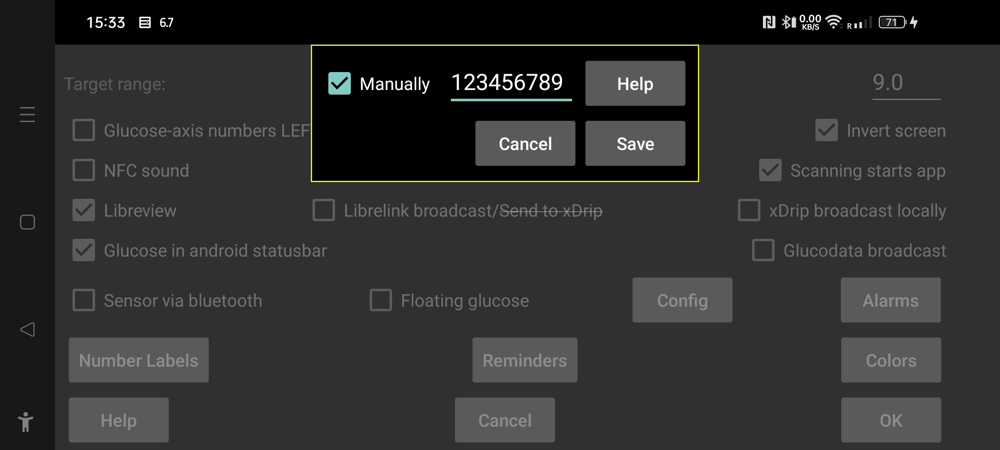

If you have root access connect your phone to your computer and type
adb shell su -c grep PREF_UNIQUE_ID /data/data/com.freestylelibre3.app.nl/shared_prefs/com.freestylelibre3.app.nl_preferences.xml
Where you replace nl with the language code of the Libre3 app you are using. This will return something like:
<string name="PREF_UNIQUE_ID">2fe33cb2-3ca4-4a44-9fea-13c24fddf487</string>
When you later add an account, this doesn't need to be the same as your libreview account id. You can find it on your when making use of the libreview webinterface. It is displayed in the url after reports. For example https://www.libreview.com/reports/2fe33cb2-3ca4-4a44-9fea-13c24fddf487
From 2fe33cb2-3ca4-4a44-9fea-13c24fddf487, you can get the account id with the following java program:
public class conv {
static private final int h(String str) {
int length = str.length();
int i2 = 0;
int i3 = 0;
while (i2 < length) {
char
charAt = str.charAt(i2);
i2++;
int i4
= i3 * (-2128831035);
i3 = i4
^ charAt;
}
return i3;
}
static private final String uns(String str) {
return Integer.toUnsignedString(h(str));
}
public static void main(String[] args) {
System.out.println(uns(args[0]));
}
}
Put it in conv.java, build it with
javac java.java
run it with
java conv 2fe33cb2-3ca4-4a44-9fea-13c24fddf487
Where you replace 2fe33cb2-3ca4-4a44-9fea-13c24fddf487 with your PREF_UNIQUE_ID.
In the above example it will return 2329149245
This number you fill in in Juggluco Left menu->Settings->Libreview->Get Account ID after setting Manually.
Use a new version of the patched Libre 3 app. The Account ID is shown after "Account ID" in the Juggluco screen. Use this in Juggluco Left menu->Settings->Libreview->Get Account ID after setting Manually.
Back